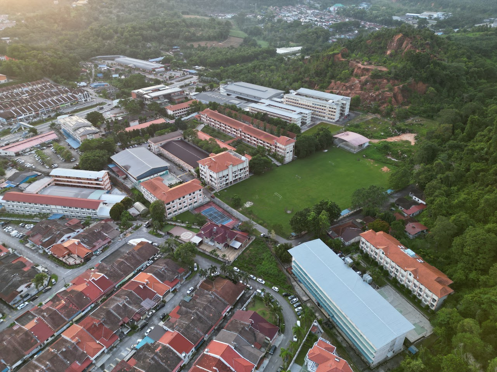
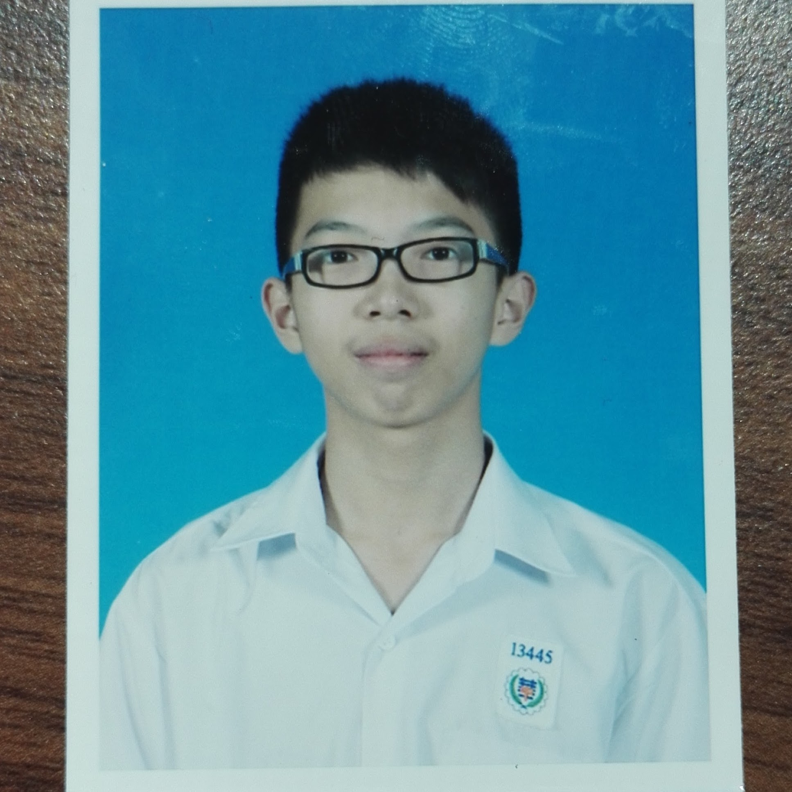
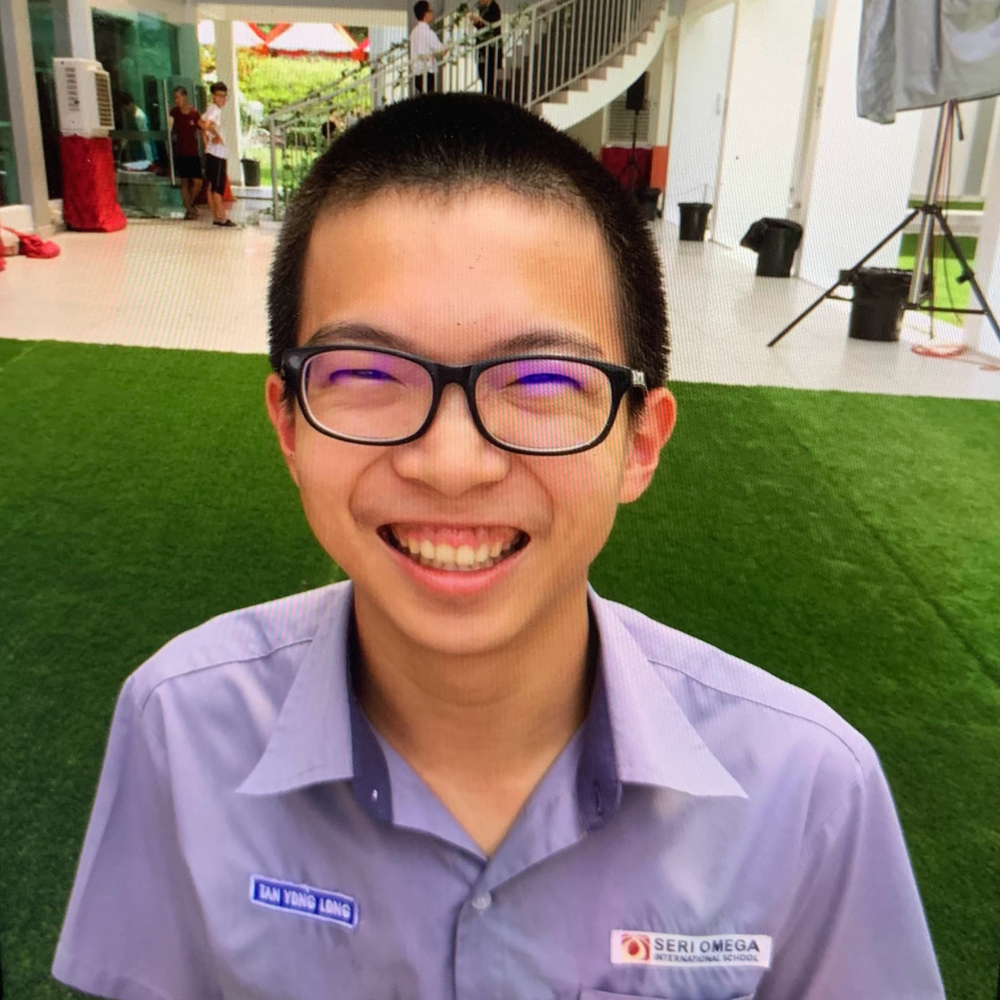
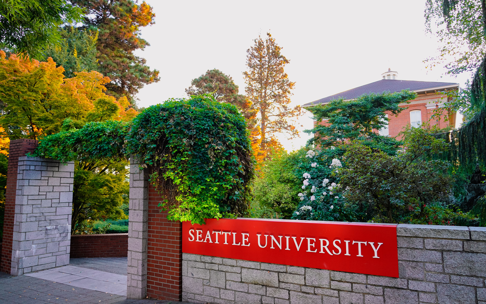
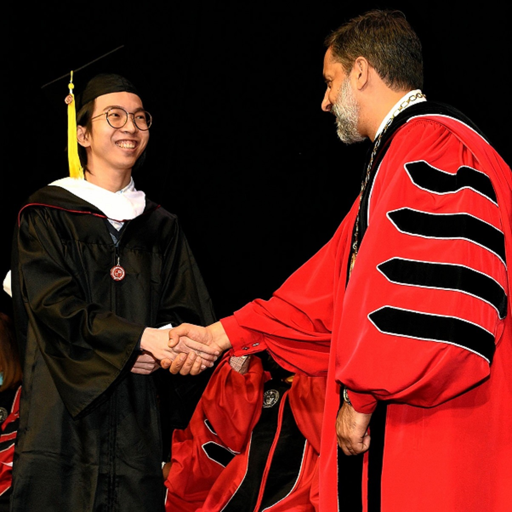
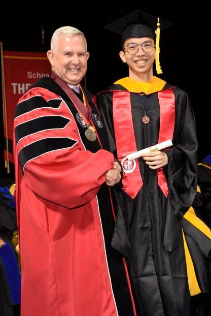
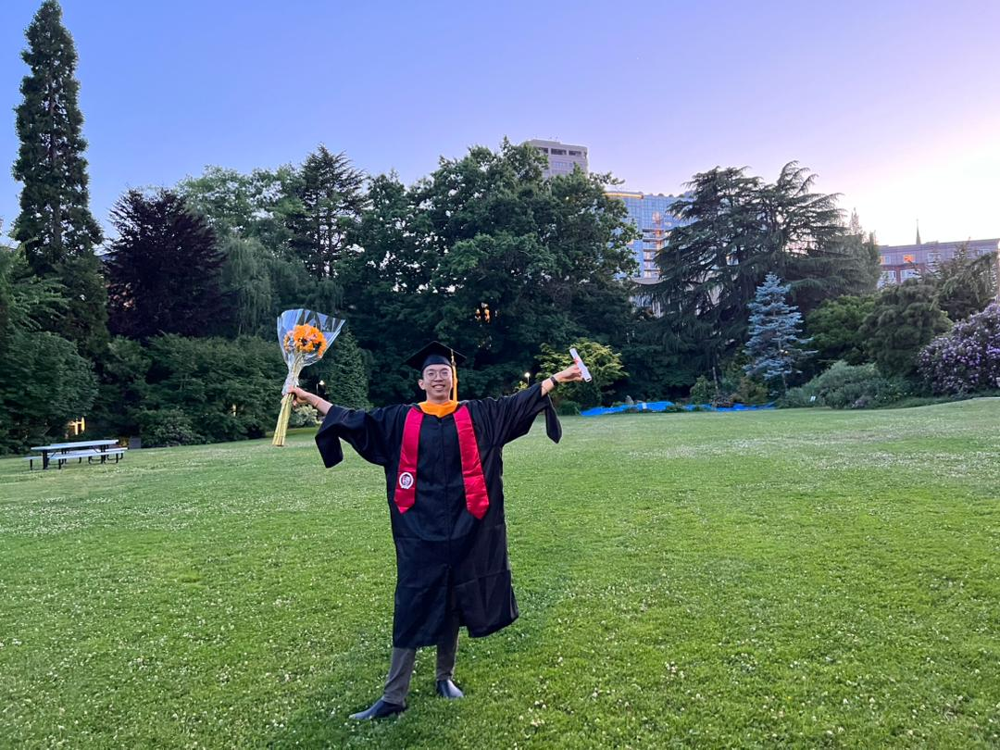

I completed my primary education at SJK(C) Hwa Jin (华仁小学 Huá rén xiǎo xué) and then proceeded to complete my middle school education.
About me
My given name is Yong Long (永泷 yǒnglóng), but you can
call me YL as well. My family name is Tan (陈
chén), and my pronouns are he/him.
Outside of my professional interests, I enjoy traveling, hiking,
and playing
Dota 2 (Defense of the Ancients 2).
2
Projects
Completed
1+
Years of
working experience
My Timeline
Primary Education

Middle School Education

I finished my middle school education at Chinese High School Batu Pahat (峇株巴辖华仁中学 Bā zhū bā xiá Huá rén zhōngxué). As part of the extracurricular activities, I learned how to play Diabolo (Chinese yo-yo, 扯铃Chě líng) and actively participated in the Diabolo club throughout my three years of middle school studies. After all, I transferred to Seri Omega Private and International School.

High School Education

I concluded my high school study at Seri Omega Private and International School. During my time there, I participated in the Chinese Chess (象棋 Xiàngqí) club and served as a resident assistant for almost two years. Subsequently, I started studying abroad in the United States.

Associate Degree Studies

Within two years, I wrapped up my associate degree studies at Seattle Central College (SCC) in June 2020, and then transferred to Seattle University to further my undergraduate studies. While I was in the SCC, I served as a member of Phi Theta Kappa, aiming to serve and support the school community through various events.

Undergraduate Studies

Despite the COVID-19 pandemic, I managed to obtain my Bachelor of Science degree in Computer Science from Seattle University in June 2022, and afterwards, I chose to pursue a Master's degree at the same institution, motivated by a desire for further learning.

Graduate Studies

I brought my educational journey to its zenith by earning a Master of Science in Computer Science, specializing in Data Science, from Seattle University in June 2023. At the beginning of 2023, I was delighted to become a teaching assistant for Dr. Zhao Xin's Refactoring & Software Design class for the remainder of my graduate studies.

My projects
Here are some pieces of work that I've done or collaborated on with my colleagues using various programming languages and tools.